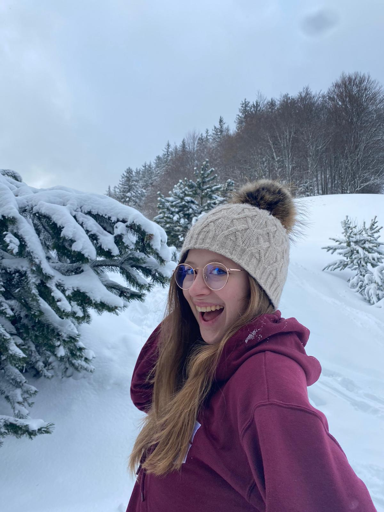

Maé Trinh-Thieu's world
Bienvenue dans ma drôle de vie !
Toi qui es curieux de me découvrir, toi qui rêve de voir un nouvel univers, toi qui a envie de t'échapper pour un petit temps, et bien te voilà au bon endoit !
Ce blog te permettra de savoir qui je suis, d'avoir un apperçu de mon entourage mais aussi, et surtout, de mes passions et mes voyages ! Ce qui, qu'on se le dise, restera quand même le plus intéressant.
Enfin, je vais te présenter une petite entreprise familiale qui me tient particulièrement à coeur.
J'me présente, je m'appelle Maé
Souvent caractérisée comme une personne calme et réfléchie, je cache cependant un grain de folie que peu de personnes peuvent soupçonner. En effet, majeure depuis peu, j'ai donc récemment quitté le coccon familial ce qui ne m'a pas encore permis de m'ouvrir entièrement aux personnes m'entourant.
Cependant, mon entrée à l'ESSEC, une école de commerce, me fait découvrir plein de nouvelles choses et notamment un grand nombre de personnes. Je commence à me trouver et à savoir la femme que je veux devenir.
Vous les copains, je n'vous oublierai jamais
Très proche de ma famille et de mes amis j'aime passer du temps en leur compagnie que ce soit lors de vacances ou tout simplement au cours d'un week-end. Mais des photos seront plus parlantes alors voici quelques extraits de ma vie.


Quand la musique est bonne
Comme on peut le voir avec les titres, la musique tient un place importante dans ma vie. En effet, depuis mes 11 ans je n'ai jamais cessé de faire de la musique. Débutant avec la chorale du collège, j'ai vite pris des cours de chant individuel me permettant de faire de nombreuses représentations scéniques. Grâce à ces expériences, j'ai pris en maturité mais aussi en confiance. J'arrive de mieux en mieux à m'affirmer et m'assumer. Je te laisse avec quelques photos ci-dessous pour que tu vois ça de toi-même.
De plus, née dans une famille de grimpeurs, je fais également de l'escalade depuis que je sais marcher (même si mon niveau ne le reflète pas forcément). Devenue une réelle passion, ce sport me permet de travailler ma souplesse mais aussi ma résistance et ma force.
Entre musique permettant de me donner confiance et escalade m'offrant la possibilité de m'affirmer j'ai trouvé un parfait équilibre dans ma vie personnelle.
Voyage voyage
J'ai eu la chance de beaucoup voyager durant ma jeunesse. De campings à hôtels 4 étoiles, de road trip à voyage en avion ou même de randonnées de 11h à saunas/hammams, on peut le dire, j'ai vu du (des) pays.
J'ai toujours adoré voyager, découvrir de nouveaux horizons ou de nouvelles cultures !
Mais rien ne sert de parler, je vous laisse plutôt avec quelques petites photos et anecdotes qui retraceront bien mieux mes aventures.
La Sagrada Família à Barcelone

Petits parapluies de Carcassone
Un fameux téléphone anglais à Bath

Marché typique espagnol à Barcelone

Jardins niçois
Couché de soleil inspirant à Bath
Levé de soleil tout en douceur à Majorque

Au coeur du tunnel le plus long d'Europe en Norvège

Simplement un port à Barcelone
Hueco
Employée depuis deux années consécutives au poste d'hôtesse d'accueil dans la salle d'escalade Hueco, j'y suis à présent employée en CDI en tant qu'assistante communication.
Mais recontextualisons : Hueco est une entreprise créée en 2014 à Strasbourg et est composée de deux salles d'escalade. La première se situe près du grand Zénith de Strasbourg alors que l'autre se trouve plutôt au centre de la ville.
Mais quelle est donc la particularité de ces salles vous me demanderez. Et bien ces salles sont de salles de bloc. Cela signifie donc qu'il n'y a aucun matériel nécessaire pour la pratique du sport ! Les tapis de 30cm à 40cm suffiront largement à amortir votre récéption qui ne dépassera jamais les 3m de haut puisque nos murs s'arrêtent à 4m50.
Et comme on dit toujours "Jamais deux sans trois" voici une autre info que tu ne voudras pas rater : Hueco a également une zone de pratique extérieure dont de vrais blocs de grès des Vosges spécialement ramené de carrières alsaciennes ! Nos murs, implantés entre carrés d'herbe et petits gravillons, sauront vous combler durant cette période d'été approchant à grands pas.
Curieux de découvrir ces salles maintenant ? Check le lien ci-dessous pour plus d'informations ;)
Découvrir Hueco
Mes contacts
Tu souhaites me voir sous un nouveau jour ?
Alors n'hésite pas à aller checker mon profil sur les autres réseaux sociaux.
Inscris-toi à ma newsletter
Tu veux suivre mes aventures ? Alors n'hésite pas : abonne-toi !